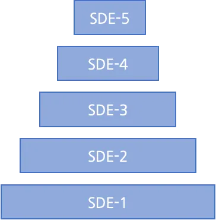
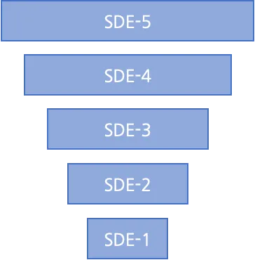
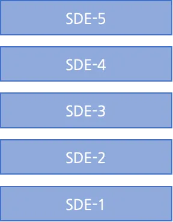
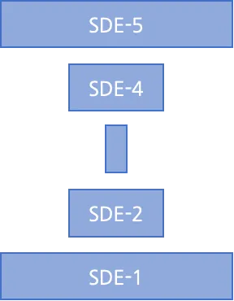

When I meet an engineering team for the first time, I’m always intrigued to learn the “shape” of the team.
What do I mean by “shape”? Well, if you map the ratios of engineers across all levels in the team, you can often derive a shape from it.
For example, imagine a team of engineers that range from SDE-1 (entry level) to SDE-5 (principal). Let’s say the team has 15 engineers and comprises five SDE-1s, four SDE-2s, three SDE-3s, two SDE-4s, and one SDE-5.
If we draw a shape depicting the number of engineers at each level, we end up with a triangle:

Understanding the shape of a team can offer a lot of insight. First, it provides data for hiring decisions. For example, do you need another senior engineer and if so, how will this impact the balance of the team?
It can also help identify mentoring opportunities by looking at the ratio of junior engineers to senior engineers who can provide guidance.
Finally, it can help highlight gaps and help understand the impact upcoming promotions or changes in levels may have.
There is no perfect shape to aspire to. Instead, I’ve found certain shapes of teams work well for different environments, various sizes of teams, and the type of product you are developing.
In this article, I’ll introduce fives shapes of teams I commonly come across: The triangle, the inverted triangle, the diamond, the rectangle, and hourglass.
For each, I’ll describe the structure of the team, the environment and products I’ve found this shape can best work for, and a few things to watch out for along the way.
The Triangle
As we covered this in the introduction, let’s start with the triangle.
The triangle has a larger ratio of junior engineers compared to senior engineers. I’ve seen this shape (and inherited many teams of this shape) at Microsoft, SAP, and Amazon, all of whom invest heavily in college recruiting and internship programs. This investment provides a strong pipeline of SDE-1 engineers.
I’ve found triangle-shaped teams work for well-established products, often those that have a good balance of new feature development and existing bug fixing and operational load. With a higher ratio earlier in their career, these teams often have engineers eager to learn new skills and take on responsibilities.
This spread also offers mentoring opportunities with senior developers responsible for the architecture and technical direction. At AWS, one of my senior engineers would often hold weekly “learn the architecture” sessions with small groups of our recent college graduates.
What to watch for: While these teams can be effective, if you have a team of this shape, I recommend monitoring the workload of the one or two senior or principal engineers at the top of the triangle.
Often, these engineers will be responsible for the architectural decisions and technical direction for new features. This, combined with what may be a heavy mentoring workload, can sometimes lead to burnout.
The Inverted Triangle
As the name implies, the inverted triangle is the opposite, with a larger ratio of principal and senior engineers compared to mid-level and junior engineers.

I’ve found an inverted triangle team can be very effective in early-stage startups and for new product development.
At Amazon, I had the opportunity to build a team from scratch, responsible for developing a v1 hardware device. I optimized towards hiring a higher ratio of principal and senior engineers who came with hardware, firmware, software, and machine learning backgrounds.
This seniority of the team provided the years of experience we needed to get the product designed and developed - something that would have been more challenging with a more traditional triangle-shaped team.
What to watch for: While I always learn from teams of this shape - the experience of the team often provides new angles I’m not thinking about - they can come with a couple of things to watch for.
First, given the seniority of many engineers in the team, it’s common to have many strong (and sometimes conflicting) opinions, especially when debating a new design or direction. With my team at Amazon, I recall having to step in often to help the team move forward with a technical decision.
Second, the work has to be new and engaging for engineers who bring this level of experience. Without this, there may not be enough “senior-level” work to go around, which can lead to boredom and eventual attrition.
Finally, while inverted triangles work well for new product development, as the product matures and needs to take on more support and maintenance tasks, there will be a need to fill out the rest of the triangle to create more balance.
The Diamond
The diamond is a larger ratio of mid-level engineers compared to senior and junior levels. The larger the ratio of mid-level engineers, the wider the diamond.
A few of my teams, including the engineering org when I first joined Code.org, have been diamond-shaped. Often, teams develop into a diamond when an organization has had a very active college recruitment program in past years and those engineers go through a couple of promotion cycles.
Diamond-shaped teams can also be very effective for well-established products. The higher ratio of mid-level engineers brings the experience and understanding of the nuances of the system.
What to watch for: If you have a diamond-shaped team, I recommend looking at the width of the diamond. If it’s too wide, there can be a high number of mid-level engineers looking for complex projects to stretch their abilities - and potentially not enough projects available to go around.
A wide diamond can also have the same effect for mentoring opportunities - with a larger number of mid-level engineers looking to mentor a smaller number of junior engineers. (This, however, is often easier to mitigate with interns, contractors, and other peer mentoring opportunities.)
The Rectangle
A rectangular-shaped team has roughly equal ratios across each level.

While I’ve found many large tech companies favor triangular-shaped teams, I’ve often come across rectangle-shaped teams in small and mid-sized organizations. Many of our engineering teams at Code.org are good examples.
Depending on the size of the engineering organization, it can also be common to see a rectangle-shaped organization and then different shapes for each of the sub-teams.
For established products, rectangles offer a good balance of feature development suitable for engineers at all levels. The equal ratio can also provide steady mentoring opportunities and career pathways.
What to watch for: While the rectangle offers plenty of mentoring opportunities, it’s important to balance college recruiting and interns - as too much can push the team towards a triangle and too less can lead to fewer mentoring opportunities for mid-level engineers.
The Hourglass
An hourglass-shaped team is the inverse of the diamond, with a larger number of senior and junior engineers compared to mid-level. Some hourglass-shaped teams may not even have any mid-level engineers. (I call these “air-gapped.”)

During my career, I’ve only come across one or two instances. Often, the hourglass shape forms when an inverted triangle team pivots to hiring college graduates (often because of slowing feature development). I’ve also seen this shape form during periods of high attrition or when two or more teams merge.
What to watch for: I don’t recommend optimizing towards an hourglass-shaped team, as in extreme cases, it can create a disconnect between the senior and junior engineers on the same team.
This can impact technical decision making, where senior engineers make all decisions and don’t involve the rest of the team. This shape can also introduce mentoring challenges, especially if senior engineers prefer to mentor mid-level vs. early career engineers.
The combination of the above can lead to senior engineers feeling frustrated that other engineers are not contributing - and less experienced engineers also becoming frustrated they are not getting the support they need from the rest of the team.
On the occasions I’ve come across this shape, I’ve always used future hiring opportunities to fill out the middle.
Conclusion
In this article, I’ve shared the concept of identifying the shape of your team and five common shapes I’ve come across: the triangle, the inverted triangle, the diamond, the rectangle, and hourglass.
While there are likely many other shapes, I hope this approach has offered a unique perspective for identifying the ratios in your own teams and thinking about your future hiring.
I’d love to hear more about the shapes you have in your teams and what you find as advantages and disadvantages of each.